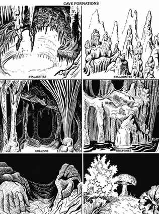

幽暗地域概览 · Overview of the Underdark
地下环境看似相似，尤其当角色连鼻尖都看不见时，实际却存在极大差异。最根本的区别来自起源：地点是由侵蚀、地震和火山喷发等自然地质力量形成，还是由有智慧或无智慧的生物为了自身需要建造？
天然地下地点 · Natural Underground Locales
洞穴和洞窟由自然力量形成，因而具有相应特征。它们经常成为地下城设定的起点。常见的洞穴有三类：石灰岩洞穴、海蚀洞和熔岩洞。
石灰岩洞穴 · Limestone Caves
石灰岩洞穴最常见，通常形成于石灰岩基岩构成的大片岩层中。不过，白云岩和大理石地形也能形成石灰岩洞穴。
石灰岩洞穴由渗入岩层的水所造成的侵蚀与腐蚀作用形成。雨水尤其有助于石灰岩洞穴的形成，因为空气中吸收的二氧化碳会让雨水变成稀释的碳酸；这种液体会迅速侵蚀石灰岩。
水渗入地下后，会逐渐拓宽通道，使石灰岩洞穴不断扩大。旱灾、洪水或地形逐渐移动导致的地下水位变化，可能增加或减少流经洞穴的水量。地下水位下降时，原本位于水下的通道会变得干燥并充满空气，形成自远古以来便能为生物提供栖身处的洞穴。
这类洞穴常可从曾经流经其中的水道入口或出口进入。入口往往极其狭窄或陡峭，但仍是石灰岩洞穴最常见的入口。洞穴若扩张得过大，顶部可能无法支撑上方岩层，天花板便会塌陷，形成天坑。天坑从地表陡直落到洞底，但愿意做些绳索作业的角色可以把它当作入口。
石灰岩洞穴排水后，渗水甚至小溪仍可能继续在其中涓涓流动。正是这些细小水流的渗入，造就了熟悉于洞穴探险者的许多壮观地下岩层。最常见的洞穴构造是石钟乳（从顶部向下悬挂）和石笋（从地面向上生长）这样的石柱。和其他洞穴构造一样，它们由水缓慢滴落、蒸发并留下少量矿物沉积而成。矿物种类不同，构造的颜色也可能从泥棕色、红色到罕见的纯晶白色不等。
其他洞穴构造包括石幔、流石和石膏花。石幔也称石帘，形成于蒸发的水留下片状岩石之处，形状像褶皱的帘幕。流石往往呈阶梯状层层流下，外观像流动的泥浆。石膏花是稀有而脆弱的小型构造，可能美丽得令人惊叹。
若洞穴持续受到水渗流影响，便称为活洞；其中的构造会在洞穴各处缓慢生长。事实上，洞穴构造最终完全填满当初由滴水和流水创造的洞穴，也并非闻所未闻。
活洞中的构造在光线照射下会闪烁发亮，而且十分坚固。虽然偶尔会有碎石区域阻碍通行，这类洞穴通常十分洁净，几乎没有尘土。当然，这指的是洞穴尚未被外界生物进入或使用，也没有暴露在地表空气中的情况。
泥也是活洞的常见特征。所有没有被流水定期冲刷的低洼处，都可能积有黏泥。泥池的深度取决于排水情况和地形形状，可能相当深。
另一方面，死洞是水流已经停止的洞穴。死洞中的构造不再闪亮；由于缺少持续湿气的加固，它们还会逐渐变得非常脆弱。长期没有水后，构造会变得极易碎裂，最终化为尘土。
死洞比活洞更可能被碎石堵塞。尘土往往覆盖一切。若能找到水，通常也是已经在池中积存了数百年的水。不过，这类水极少真正腐败；低温和缺乏阳光会阻止水体腐败。
有些石灰岩洞穴完全充满水。除非那些构造是在洞穴充满空气时形成、之后洞穴才被水填满，否则这类洞穴不会具有上述构造。一般而言，充水洞穴的通道平滑而没有碎石；不过，水流可能穿过极其狭窄的开口或紧密蜿蜒的通道，使角色难以甚至无法通行。
海蚀洞 · Sea Caves
海蚀洞形成于现今或古代海岸线，海浪反复冲刷基岩，逐渐磨出入口。它们通常比石灰岩洞小，因为海浪向洞内推进时很快便会分散能量。
海蚀洞往往部分充水。随水位变化，海蚀洞甚至可能完全沉没，洞口只有同样潜入水中的观察者才能看见。另一方面，若水位下降或地面抬升，海蚀洞也可能出现在远高于海浪的悬崖中；如果海岸线逐渐向海中移动，海蚀洞甚至可能位于内陆数英里处。
海蚀洞的地面、墙壁和顶部都很平滑，没有石灰岩洞那种壮观构造。不过，它们通常容易进入，因此更可能藏有久远居民留下的遗迹。
河流转弯时，水流冲刷外侧河岸，可能侵蚀出最终变得相当宽大的空间。这类洞窟在大多数方面都类似海蚀洞。
熔岩洞 · Lava Caves
熔岩洞形成于流动熔岩表面结成硬壳、而硬壳下的熔岩仍继续流动之时。条件合适时，熔岩流走，便会留下可能相当宽大的充气空间。
熔岩洞常见于火山活动地区。它们没有石灰岩洞的典型构造。除非位于降雨量很大的地区或海拔很低的地方，熔岩洞很可能完全干燥。事实上，由于形成方式特殊，许多熔岩洞根本没有通往外界的出口；只有偶然挖掘，或在地壳很薄的地方意外击穿硬壳，才可能发现它们。
其他天然地点与地热 · Other Natural Locations and Geothermal Heat
地震和山崩有时会形成由堆积碎石勉强支撑的地下腔室。这些地点虽然像洞穴，却不是真正的洞穴。有时腔室足够大，能让一队角色进入，但其中通常没有多少可看之处。不过，它们可以成为很好的过夜避难处，也可能成为各种敌意动物或怪物的舒适巢穴。
地质断层会在大片岩层移动、而邻近岩层保持不动时，在地下形成空腔。这类洞窟往往完全封闭，但可能非常巨大。
地热是任何类型深层洞穴都可能出现的特征，尤其容易出现在熔岩洞中，因为熔岩本身就是地热的载体。地热就是来自地壳深处未知区域的热能。
地下探险者可能以多种方式遇到这种热量。最壮观的或许是发出深红光芒的熔岩流。熔化的岩石把热量从地底最深处带向地表，并会长时间保留和辐射热量。熔岩温度约为 1,800°F；任何被迫接触它、且不具火焰抗性的生物都会迅速死亡。
即使熔岩已经冷却成固态硬壳，仍可能灼热得无法忍受。若角色愚蠢到踏上这样的硬壳，就有可能踩穿地面，掉进下方地狱般的热量中。
蒸汽是洞穴探险者可能遇到的另一种地热表现。蒸汽虽然远不如熔岩炽热，却仍会烫伤甚至杀死被猛烈喷流击中的生物。在地热活动强烈的区域，只要水流入某处、而那里的温度足以让水迅速汽化，蒸汽就可能突然出现。这样的瞬间汽化会造成很高的蒸汽压力，使蒸汽从远离实际热源的地方喷发出来。
地热较为温和的表现是温水或热水。水温取决于热源的距离和强度，可以从温温的状态一直到沸腾。
从地下通道升起的暖空气或热空气，往往是探险者接近地热源的第一个警告。这种体验甚至可能相当舒适，尤其对于在阴暗潮湿的洞室中长途远征后已经冻冷的角色而言。

非天然地下地点 · Unnatural Underground Locales
几乎所有冒险者都熟悉地下城。有些地下城完全建在洞穴中，另一些则只把洞穴当作入口或紧急出口。无论哪种情况，每座地下城都是有智慧的生物为了某种特定目的建造的。
地下城通道通常位于地表下数百英尺以内，但这并非硬性规定。地下城越深，把挖出的材料搬运出去就越困难。
地下城通常从砂岩或石灰岩等软岩中开凿。这些材料不像花岗岩那么难以挖掘，同时仍能为地下城的走廊和房间提供稳固支撑。有些地下城从泥土中挖出，必须持续加固，至少每隔 10 英尺就要支撑一次，以防塌方。泥土开凿的地下城不会像石质地下城那样长久。
有些地下城最初是建筑物；后来废墟又被一层层新建筑掩埋，直到原本的地层看起来已经深埋地下。角色可能在建筑完成很久以后才遇到地下城，此时它可能已经濒临坍塌；也可能是刚刚挖出的地下城，甚至仍在施工。
地下城的用途多种多样，最常见的包括监狱、藏宝处、地下生物群体的巢穴以及防御据点。在一个飞行生物无处不在的世界里，地下城甚至可能成为比城堡更坚固的堡垒！
奇幻世界中的矿井几乎总是隧道或竖井。有些矿井，尤其是矮人或侏儒等勤勉挖掘者历经数百年开发的矿井，可能成为纵横数十英里的复杂三维隧道网络。
矿井可以处于开采中或停用状态，区别在于它当前是否仍在使用。废弃矿井的矿工可能是因为开采的矿脉已经耗尽而停工，但不一定如此；灾难或冲突也可能迫使矿井停止运作。活跃矿井通常防卫严密，废弃矿井则常常成为地下怪物的巢穴。
巢穴通常是生物为栖身而挖出的长隧道，中途可能有一处扩宽的区域。只有非常大的巢穴才足以让角色进入；遗憾的是，极大的巢穴通常由极大的生物挖掘，而它们不一定会善待闯入者。
巢穴通常从泥土中挖出，但某些生物（例如蛮甲兽）能够在实心岩石中挖掘。巢穴的直径通常不会大于挖掘者本身；不过，巢穴最深处往往会挖出一个更大的房间。
地下领域 · Realms
地下领域是地表深处由洞窟、地下城和来历不明的高大通道组成的广阔地下区域。地下领域很少位于距地表一英里以内的地方，而且往往比这深得多。
对大多数地表生物来说，这些领域充满神秘。关于它们的资料要么来自猜测，要么来自少数曾经造访这些地下领域、又活着返回并讲述经历的冒险者。
已知卓尔、深侏儒、灰矮人、kuo-toa 和德罗等种族居住在永远见不到阳光的广大地下区域。地下领域的真实范围只能猜测。
这些领域包含庞大的洞窟网络，其规模可能堪比一个完整国家；其中的地下水域也可能像地表海洋一样宽广。这些地下海同样拥有岛屿。有些广阔领域最好被称为荒野，因为那里没有任何文化繁荣；另一些地区则拥有足以与最先进文明相称的城市和堡垒。
许多居住在这些领域的生物，地表居民已经在地下城这个交汇地带遇到过，因为深地居民和地表居民最有可能在那里相遇。还有一些可怕生物甚至从不上升到地下城所在的高度；关于它们生活在地下领域深处的传闻很多，但没有活人能够证明它们的存在。

地下世界的危险 · Hazards of the Underearth
地下城、巢穴、洞穴和地下领域，都有一些由它们位于地表之下这一事实造成的共同危险。下列危险相对少见，但每一种都足以威胁深埋地下的角色生命。
塌方 · Cave-ins
对于生活在数吨泥土和岩石下方的生物来说，塌方是持续存在的问题。侵蚀，或地震、爆炸等突然震动，都可能触发塌方。
当然，正好位于塌陷的地下城或洞穴区域下方的角色和生物，会受到砸落材料造成的伤害；他们还经常会被材料重量压住，或被困在空气稀少的小空间里。
地下城通常用木梁或石拱支撑通道，以防止塌方。洞窟没有这种工程防护，而地下领域通常太过辽阔，无法实际进行这样的加固。地下领域规模庞大且结构坚固，很少发生塌方；不过，一旦地下领域发生塌方，其灾难潜势足以与席卷地表土地的最严重飓风或潮汐相匹敌。
洪水 · Floods
洪水是另一种可能造成灾难后果的自然现象。地下环境狭窄，洪水几乎没有机会摊开并分散影响。地下走廊可能完全灌满水，使任何被困其中、需要空气呼吸的生物几乎必然溺水。
火灾 · Fires
火灾以双重方式威胁地下居所：它会烧毁路径上的可燃物，也会耗尽数量明确有限的宝贵氧气。
幸运的是，至少从预防火灾的角度看，木材并不是地下常用的建筑材料。把木材运入地下城很困难，而且木材在潮湿环境中容易腐烂，这两点都会阻碍木材的使用。不过，某些工作（例如支撑走廊）用木材完成要比用石头容易得多。
有毒气体 · Poisonous Gases
有毒气体是所有依赖氧气生存的生物都无法忽视、却又看不见的真实威胁。这些气体可能来自自然，例如火山活动区常产生的二氧化硫；也可能来自魔法或人工制造。显然，在深地下狭窄的环境中，把毒气当作战争武器会得到显著增强的效果。
火山 · Volcanoes
火山是地下火灾、有毒气体排放以及其他问题的主要原因。火山爆发常与地震同时发生；一次地下喷发可能让有人居住的走廊充满熔岩或蒸汽，也可能堵死逃生通道或常用的交通路线。